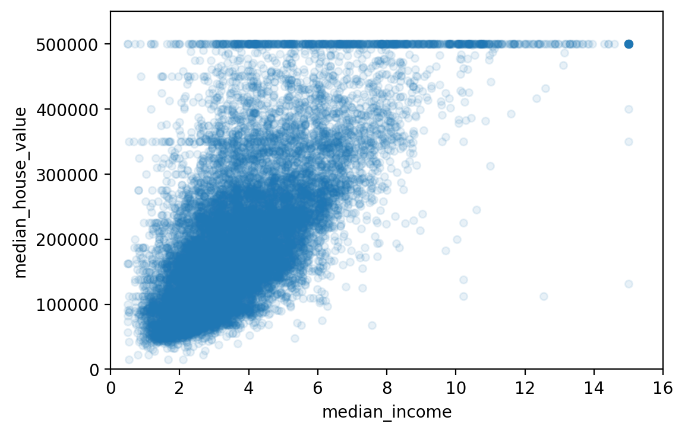
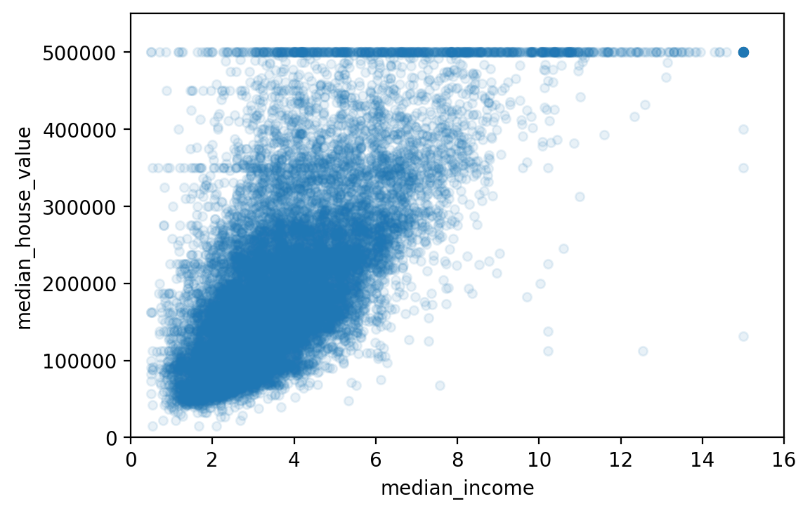

19. Machine Learning I: Introduction to Machine Learning¶
This chapter and the next are heavily built on two chapters in [Geron2019] Hands-On Machine Learning with Scikit-Learn, Kera & TensorFlow. You can find a link to the GitHub page of this textbook at Geron GitHub
Machine learning is ubiquitous. Machine learning algorithm guide your daily google searches, determine the way Netflix presents its offerings to you, guide your selections when shopping on sites such as Amazon, translate your spoken words into code that your Phone or any other of the many voice assistants can process further into meaningful services for you, drive Teslas semi-autonomous, or simply recognize your face on a photo you upload onto Facebook. These are just a few of the many many examples where Machine Learning has entered your life, whether you are aware of it or not.

Fig. 19.1 Brief History of Machine Learning¶
One of the earliest examples of a Machine Learning algorithm that you are familiar with is the Spam Filter. We will be using this example to further explain what machine learning does and how different machine learning algorithms can be classified.
19.1. Different Types of Machine Learning Algorithms¶
Machine learning algorithms can be classified according to the following criteria:
- Supervised vs. unsupervised vs. reinforcement learning
Are they trained (estimated) with human supervision, without supervision, or do they reinforce actions based on rewards and penalties.
- Online vs. batch learning
Do they learn incrementally as data becomes available or do they require “all of the data” at once
- Instance-based vs. model-based learning
Do they compare new data points to known data points or do they detect patterns building a predictive model (based on parameters)
Let’s discuss this classification in some more detail. In supervised learning, the training set (i.e., data) you feed to the algorithm includes the desired outcome or solution, called label (i.e., the dependent or outcome variable). Unsupervised learning deals with unlabeled data.
Fig. 19.2 summarizes the different types of
Supervised Learning,
Unsupervised Learning, and
Reinforcement Learning.

Fig. 19.2 Classification of ML algorithms.¶
Table 19.1 contrasts the language we use in Econometrics with the language commonly used in Machine Learning.
Item |
Econometrics |
Machine Learning2011 |
|---|---|---|
Data |
Data/Obs. |
Training data/set |
y |
Dependent var |
Label |
x or X |
Independent var |
Feature/predictor |
Estimation |
Training algo/model |
19.2. A First Regression Model Example¶
19.2.1. Downloading the Data¶
We again start by first importing some libraries.
# https://github.com/ageron/handson-ml/
import numpy as np
import pandas as pd
import os
import tarfile
from six.moves import urllib
We first need to download the data from GitHub:
DOWNLOAD_ROOT = "https://raw.githubusercontent.com/ageron/handson-ml/master/"
HOUSING_URL = DOWNLOAD_ROOT + "datasets/housing/housing.tgz"
def fetch_housing_data(housing_url=HOUSING_URL):
tgz_path = os.path.join("housing.tgz")
urllib.request.urlretrieve(housing_url, tgz_path)
housing_tgz = tarfile.open(tgz_path)
housing_tgz.extractall()
housing_tgz.close()
fetch_housing_data()
Once that is done, we store the
data on our local drive. You want to avoid downloading the data each time you
run the script file. So download it once, store it and then comment our the
download section of your code and just read the data from your local drive
using the pd.read_csv() function from the numpy library.
We then can use a few commands to look at our data which is organized as a
Pandas Dataframe.
housing = pd.read_csv("Lecture_MachineLearning_1/housing.csv")
print(housing.head())
longitude latitude housing_median_age total_rooms
total_bedrooms \
0 -122.23 37.88 41.0 880.0
129.0
1 -122.22 37.86 21.0 7099.0
1106.0
2 -122.24 37.85 52.0 1467.0
190.0
3 -122.25 37.85 52.0 1274.0
235.0
4 -122.25 37.85 52.0 1627.0
280.0
population households median_income median_house_value
ocean_proximity
0 322.0 126.0 8.3252 452600.0
NEAR BAY
1 2401.0 1138.0 8.3014 358500.0
NEAR BAY
2 496.0 177.0 7.2574 352100.0
NEAR BAY
3 558.0 219.0 5.6431 341300.0
NEAR BAY
4 565.0 259.0 3.8462 342200.0
NEAR BAY
We can get a quick summary of our data using the .info() function on the
dataframe.
print(housing.info())
<class 'pandas.core.frame.DataFrame'>
RangeIndex: 20640 entries, 0 to 20639
Data columns (total 10 columns):
# Column Non-Null Count Dtype
--- ------ -------------- -----
0 longitude 20640 non-null float64
1 latitude 20640 non-null float64
2 housing_median_age 20640 non-null float64
3 total_rooms 20640 non-null float64
4 total_bedrooms 20433 non-null float64
5 population 20640 non-null float64
6 households 20640 non-null float64
7 median_income 20640 non-null float64
8 median_house_value 20640 non-null float64
9 ocean_proximity 20640 non-null object
dtypes: float64(9), object(1)
memory usage: 1.6+ MB
None
19.2.2. Inspecting the Data¶
We can also get some summary statistic for specific feature variables (in
econometrics we refer to these as independent variables). We can check the
variable ocean_proximity for instance. It is a categorical variable. We
cannot do any numerical statistics with this but we can get a feel for this
variable by counting how many observation by category we have.
print(housing["ocean_proximity"].value_counts())
<1H OCEAN 9136
INLAND 6551
NEAR OCEAN 2658
NEAR BAY 2290
ISLAND 5
Name: ocean_proximity, dtype: int64
Finally, we can use the .describe() dataframe method (or function) to get
certain summary statistics for each data column.
print(housing.describe())
longitude latitude housing_median_age total_rooms \
count 20640.000000 20640.000000 20640.000000 20640.000000
mean -119.569704 35.631861 28.639486 2635.763081
std 2.003532 2.135952 12.585558 2181.615252
min -124.350000 32.540000 1.000000 2.000000
25% -121.800000 33.930000 18.000000 1447.750000
50% -118.490000 34.260000 29.000000 2127.000000
75% -118.010000 37.710000 37.000000 3148.000000
max -114.310000 41.950000 52.000000 39320.000000
total_bedrooms population households median_income \
count 20433.000000 20640.000000 20640.000000 20640.000000
mean 537.870553 1425.476744 499.539680 3.870671
std 421.385070 1132.462122 382.329753 1.899822
min 1.000000 3.000000 1.000000 0.499900
25% 296.000000 787.000000 280.000000 2.563400
50% 435.000000 1166.000000 409.000000 3.534800
75% 647.000000 1725.000000 605.000000 4.743250
max 6445.000000 35682.000000 6082.000000 15.000100
median_house_value
count 20640.000000
mean 206855.816909
std 115395.615874
min 14999.000000
25% 119600.000000
50% 179700.000000
75% 264725.000000
max 500001.000000
We next start with analyzing our data using graphs and simple statistics.
# %matplotlib inline
import matplotlib.pyplot as plt
housing.hist(bins=50, figsize=(20,15))
# save_fig("attribute_histogram_plots")
plt.show()

19.2.3. Splitting the Data¶
In machine learning it is important to be able to assess how well your trained model can predict outcome variables (or label variables in the case of supervised machine learning). In order to do this we need to split the sample into a training sample that you use to train (estimate) the model with and into a test sample that you can then use to verify how well your model makes out of sample predictions.
It is important that you randomly split the sample and that both samples maintain the features of the overall sample. For instance if your main sample contains 45 percent men, then you want to split the sample in such a way that the training sample has roughly 45 percent men in it and the test sample has roughly 45 percent men in it.
In order to accomplish this we use the built in command train_test_split
from the sklearn machine learning library. When you call this function you
need to specify how large you want the test sample to be. Below we choose a
split that maintains 80 percent of the observations in the raw data for
the training sample and 20 percent for test sample. We set the random seed by
hand, so that our results become reproducible, i.e., the sample is split in
exactly the same way each time we run the script file.
from sklearn.model_selection import train_test_split
# to make this notebook's output identical at every run
np.random.seed(42)
train_set, test_set = train_test_split(housing, test_size=0.2, random_state=42)
We can now inspect the test sample.
print(test_set.head())
longitude latitude housing_median_age total_rooms
total_bedrooms \
20046 -119.01 36.06 25.0 1505.0
NaN
3024 -119.46 35.14 30.0 2943.0
NaN
15663 -122.44 37.80 52.0 3830.0
NaN
20484 -118.72 34.28 17.0 3051.0
NaN
9814 -121.93 36.62 34.0 2351.0
NaN
population households median_income median_house_value \
20046 1392.0 359.0 1.6812 47700.0
3024 1565.0 584.0 2.5313 45800.0
15663 1310.0 963.0 3.4801 500001.0
20484 1705.0 495.0 5.7376 218600.0
9814 1063.0 428.0 3.7250 278000.0
ocean_proximity
20046 INLAND
3024 INLAND
15663 NEAR BAY
20484 <1H OCEAN
9814 NEAR OCEAN
One thing that is important when splitting the data is to maintain the composition of the data in the subsamples, so that subsamples correctly represent the large sample. Let us look at an example.
If we analyze income using the histogram plot we have the following distribution of income.
housing["median_income"].hist()
<matplotlib.axes._subplots.AxesSubplot at 0x7fa6105707d0>

We can also make a categorical variable out of income using the following command.
housing["income_cat"] = pd.cut(housing["median_income"],
bins=[0., 1.5, 3.0, 4.5, 6., np.inf],
labels=[1, 2, 3, 4, 5])
In order to do that we need to define the bins and assign labels to each bin.
Where label 1 indicates the low income group, label 2 indicates income
between zero and 1.5, etc. We can then plot histograms of this new categorical
variable.
print(housing["income_cat"].value_counts())
housing["income_cat"].hist()
3 7236
2 6581
4 3639
5 2362
1 822
Name: income_cat, dtype: int64
<matplotlib.axes._subplots.AxesSubplot at 0x7fa61048eed0>

When we split the sample into a training set and a test set we need to make
sure that the distribution of the different income groups is maintained in the
subsamples. We want to avoid as situation where we have, let’s say richer
households in the training sample and relatively poorer households in the
testing sample. We can accomplish this with stratified sampling. The built in
command STratifiedShuffleSplit will split the data ensuring that the
distribution is maintained.
from sklearn.model_selection import StratifiedShuffleSplit
split = StratifiedShuffleSplit(n_splits=1, test_size=0.2, random_state=42)
for train_index, test_index in split.split(housing, housing["income_cat"]):
strat_train_set = housing.loc[train_index]
strat_test_set = housing.loc[test_index]
We can check this by comparing the histogram we made earlier for the entire data with the histogram for the income variables of the stratified test sample. You see that the proportions of the different income groups are maintained because we split the sample according to the income strata in the above code block.
strat_test_set["income_cat"].value_counts() / len(strat_test_set)
print(housing["income_cat"].value_counts() / len(housing))
3 0.350581
2 0.318847
4 0.176308
5 0.114438
1 0.039826
Name: income_cat, dtype: float64
We next do it more systematic across the full data, the stratified test set, and the non-stratified test set. We then plot the proportions of the income groups for each data set. You want the proportions in the test set be very close to the income proportions in the full data.
def income_cat_proportions(data):
return data["income_cat"].value_counts() / len(data)
train_set, test_set = train_test_split(housing, test_size=0.2, random_state=42)
compare_props = pd.DataFrame({
"Overall": income_cat_proportions(housing),
"Stratified": income_cat_proportions(strat_test_set),
"Random": income_cat_proportions(test_set),
}).sort_index()
compare_props["Rand. %error"] = 100 * compare_props["Random"] / compare_props["Overall"] - 100
compare_props["Strat. %error"] = 100 * compare_props["Stratified"] / compare_props["Overall"] - 100
Before we move on, we drop the income category variable because we do not use this categorical variable in our “forecasting” model.
for set_ in (strat_train_set, strat_test_set):
set_.drop("income_cat", axis=1, inplace=True)
19.2.4. Visualize data to gain insight¶
We next copy the stratified training data set and assign it a shorter name.
housing = strat_train_set.copy()
We next make a scatter splot to get a feel for the geographic location of the house observations. Once we plot it, we roughly see the outline of the State of California.
housing.plot(kind="scatter", x="longitude", y="latitude")
# save_fig("bad_visualization_plot")
<matplotlib.axes._subplots.AxesSubplot at 0x7fa60c335490>
{kind=link}
We can do a little better by making the data points in the graph a bit opaque.
housing.plot(kind="scatter", x="longitude", y="latitude", alpha=0.1)
# save_fig("better_visualization_plot")
<matplotlib.axes._subplots.AxesSubplot at 0x7fa60c318210>
{kind=link}
We can also adjust the data point size using a population measure. So a bigger point represents a housing observation from a place with a higher population density.
housing.plot(kind="scatter", x="longitude", y="latitude", alpha=0.4,
s=housing["population"]/100, label="population", figsize=(10,7),
c="median_house_value", cmap=plt.get_cmap("jet"), colorbar=True,
sharex=False)
plt.legend()
# save_fig("housing_prices_scatterplot")
<matplotlib.legend.Legend at 0x7fa60c26a210>

We next investigate correlations between the value of the house and the other variables in our data in order to get a feel for what a good forecasting model should factor in.
corr_matrix = housing.corr()
print(corr_matrix["median_house_value"].sort_values(ascending=False))
median_house_value 1.000000
median_income 0.687160
total_rooms 0.135097
housing_median_age 0.114110
households 0.064506
total_bedrooms 0.047689
population -0.026920
longitude -0.047432
latitude -0.142724
Name: median_house_value, dtype: float64
The Pandas library has a very powerful command that allows you to draw
scatter plots for all variable combinations. This is a visual method to inspect
the correlation between variables.
# from pandas.tools.plotting import scatter_matrix # For older versions of Pandas
from pandas.plotting import scatter_matrix
attributes = ["median_house_value", "median_income", "total_rooms",
"housing_median_age"]
scatter_matrix(housing[attributes], figsize=(12, 8))
# save_fig("scatter_matrix_plot")
housing.plot(kind="scatter", x="median_income", y="median_house_value",
alpha=0.1)
plt.axis([0, 16, 0, 550000])
# save_fig("income_vs_house_value_scatterplot")
[0, 16, 0, 550000]
 

{kind=link}
Finally we can generate some additional variables that are combinations of variables in our original data set.
housing["rooms_per_household"] = housing["total_rooms"]/housing["households"]
housing["bedrooms_per_room"] = housing["total_bedrooms"]/housing["total_rooms"]
housing["population_per_household"]=housing["population"]/housing["households"]
# Note: there was a bug in the previous cell, in the definition of the rooms_per_household attribute. This explains why the correlation value below differs slightly from the value in the book (unless you are reading the latest version).
corr_matrix = housing.corr()
print(corr_matrix["median_house_value"].sort_values(ascending=False))
median_house_value 1.000000
median_income 0.687160
rooms_per_household 0.146285
total_rooms 0.135097
housing_median_age 0.114110
households 0.064506
total_bedrooms 0.047689
population_per_household -0.021985
population -0.026920
longitude -0.047432
latitude -0.142724
bedrooms_per_room -0.259984
Name: median_house_value, dtype: float64
19.2.5. Training a Regression Model¶
Before training (estimating) the model we need to prepare the data for the built in Machine Learning algorithms. We need to make sure that the data only contains numeric data and not strings, lists, etc.
We first put the label variable and the rest of the data (the X variables) into separate dataframes.
housing = strat_train_set.drop("median_house_value", axis=1) # drop labels for training set
housing_labels = strat_train_set["median_house_value"].copy()
We then check how many observations with incomplete (i.e., missing) observations we have.
sample_incomplete_rows = housing[housing.isnull().any(axis=1)].head()
print(sample_incomplete_rows)
longitude latitude housing_median_age total_rooms
total_bedrooms \
4629 -118.30 34.07 18.0 3759.0
NaN
6068 -117.86 34.01 16.0 4632.0
NaN
17923 -121.97 37.35 30.0 1955.0
NaN
13656 -117.30 34.05 6.0 2155.0
NaN
19252 -122.79 38.48 7.0 6837.0
NaN
population households median_income ocean_proximity
4629 3296.0 1462.0 2.2708 <1H OCEAN
6068 3038.0 727.0 5.1762 <1H OCEAN
17923 999.0 386.0 4.6328 <1H OCEAN
13656 1039.0 391.0 1.6675 INLAND
19252 3468.0 1405.0 3.1662 <1H OCEAN
We next run a built in function over our data that attempts to impute missing data with the median values of similar observations.
# Warning: Since Scikit-Learn 0.20, the sklearn.preprocessing.Imputer class was replaced by the sklearn.impute.SimpleImputer class.
try:
from sklearn.impute import SimpleImputer # Scikit-Learn 0.20+
except ImportError:
from sklearn.preprocessing import Imputer as SimpleImputer
imputer = SimpleImputer(strategy="median")
Before we run the imputing algorithm we need to remove variables from the dataframe that are not numeric such as categorical variables.
# Remove the text attribute because median can only be calculated on numerical attributes:
housing_num = housing.drop('ocean_proximity', axis=1)
# alternatively: housing_num = housing.select_dtypes(include=[np.number])
imputer.fit(housing_num)
print(imputer.statistics_)
print(housing_num.median().values)
X = imputer.transform(housing_num)
housing_tr = pd.DataFrame(X, columns=housing_num.columns,
index=housing.index)
[-118.51 34.26 29. 2119.5 433. 1164. 408.
3.5409]
[-118.51 34.26 29. 2119.5 433. 1164. 408.
3.5409]
We have now created a complete dataset with no more missing observations that only contains numeric variables.
We next need to handle the categorical variable of ocean proximity of a housing unit. Let us inspect this variable first.
housing_cat = housing[['ocean_proximity']]
housing_cat.head(10)
ocean_proximity
17606 <1H OCEAN
18632 <1H OCEAN
14650 NEAR OCEAN
3230 INLAND
3555 <1H OCEAN
19480 INLAND
8879 <1H OCEAN
13685 INLAND
4937 <1H OCEAN
4861 <1H OCEAN
We next use a label encoder function which is part of the sklearn toolkit.
This is basically a function that will generate dummy variables out of
categorical variables. Dummy variables are variables that are either 0 or 1 and
and it can be used to encode categorical (i.e., non numerical attributes) such
as gender. The dummy variable could be called d_female. It is equal to
1 if a person is female and 0 if a person is not female.
The ocean proximity variable has multiple categories in it, not just two as in
the gender example. For each category of the ocean proximity variable we have
to create a dummy variable. We could accomplish this separately for each dummy
variable using if statements or we can use the built in OrdinalEncoder
to do it in one line of code.
# Warning: earlier versions of the book used the LabelEncoder class or Pandas’ Series.factorize() method to encode string categorical attributes as integers. However, the OrdinalEncoder class that was introduced in Scikit-Learn 0.20 (see PR #10521) is preferable since it is designed for input features (X instead of labels y) and it plays well with pipelines (introduced later in this notebook). If you are using an older version of Scikit-Learn (<0.20), then you can import it from future_encoders.py instead. try:
from sklearn.preprocessing import OrdinalEncoder
- except ImportError:
from future_encoders import OrdinalEncoder # Scikit-Learn < 0.20
ordinal_encoder = OrdinalEncoder() housing_cat_encoded = ordinal_encoder.fit_transform(housing_cat) housing_cat_encoded[:10]
print(ordinal_encoder.categories_)
# Warning: earlier versions of the book used the LabelBinarizer or CategoricalEncoder classes to convert each categorical value to a one-hot vector. It is now preferable to use the OneHotEncoder class. Since Scikit-Learn 0.20 it can handle string categorical inputs (see PR #10521), not just integer categorical inputs. If you are using an older version of Scikit-Learn, you can import the new version from future_encoders.py:
- try:
from sklearn.preprocessing import OrdinalEncoder # just to raise an ImportError if Scikit-Learn < 0.20 from sklearn.preprocessing import OneHotEncoder
- except ImportError:
from future_encoders import OneHotEncoder # Scikit-Learn < 0.20
cat_encoder = OneHotEncoder() housing_cat_1hot = cat_encoder.fit_transform(housing_cat) housing_cat_1hot
print(cat_encoder.categories_)
# get the right column indices: safer than hard-coding indices 3, 4, 5, 6 rooms_ix, bedrooms_ix, population_ix, household_ix = [
list(housing.columns).index(col) for col in (“total_rooms”, “total_bedrooms”, “population”, “households”)]
from sklearn.preprocessing import FunctionTransformer
- def add_extra_features(X, add_bedrooms_per_room=True):
rooms_per_household = X[:, rooms_ix] / X[:, household_ix] population_per_household = X[:, population_ix] / X[:, household_ix] if add_bedrooms_per_room:
bedrooms_per_room = X[:, bedrooms_ix] / X[:, rooms_ix] return np.c_[X, rooms_per_household, population_per_household,
bedrooms_per_room]
- else:
return np.c_[X, rooms_per_household, population_per_household]
- attr_adder = FunctionTransformer(add_extra_features, validate=False,
kw_args={“add_bedrooms_per_room”: False})
housing_extra_attribs = attr_adder.fit_transform(housing.values)
- housing_extra_attribs = pd.DataFrame(
housing_extra_attribs, columns=list(housing.columns)+[“rooms_per_household”, “population_per_household”], index=housing.index)
housing_extra_attribs.head()
from sklearn.pipeline import Pipeline from sklearn.preprocessing import StandardScaler
- num_pipeline = Pipeline([
(‘imputer’, SimpleImputer(strategy=”median”)), (‘attribs_adder’, FunctionTransformer(add_extra_features, validate=False)), (‘std_scaler’, StandardScaler()),
])
housing_num_tr = num_pipeline.fit_transform(housing_num)
- try:
from sklearn.compose import ColumnTransformer
- except ImportError:
from future_encoders import ColumnTransformer # Scikit-Learn < 0.20
num_attribs = list(housing_num) cat_attribs = [“ocean_proximity”]
- full_pipeline = ColumnTransformer([
(“num”, num_pipeline, num_attribs), (“cat”, OneHotEncoder(), cat_attribs),
])
housing_prepared = full_pipeline.fit_transform(housing)
#%% Select and train a model
from sklearn.linear_model import LinearRegression
lin_reg = LinearRegression() lin_reg.fit(housing_prepared, housing_labels)
# let’s try the full preprocessing pipeline on a few training instances some_data = housing.iloc[:5] some_labels = housing_labels.iloc[:5] some_data_prepared = full_pipeline.transform(some_data)
print(“Predictions:”, lin_reg.predict(some_data_prepared)) print(“Lables:”, list(some_labels))
from sklearn.metrics import mean_squared_error
housing_predictions = lin_reg.predict(housing_prepared) lin_mse = mean_squared_error(housing_labels, housing_predictions) lin_rmse = np.sqrt(lin_mse) print(lin_rmse)
from sklearn.metrics import mean_absolute_error
lin_mae = mean_absolute_error(housing_labels, housing_predictions) print(lin_mae)
from sklearn.tree import DecisionTreeRegressor
tree_reg = DecisionTreeRegressor(random_state=42) tree_reg.fit(housing_prepared, housing_labels)
- DecisionTreeRegressor(criterion=’mse’, max_depth=None, max_features=None,
max_leaf_nodes=None, min_impurity_decrease=0.0, min_impurity_split=None, min_samples_leaf=1, min_samples_split=2, min_weight_fraction_leaf=0.0, presort=False, random_state=42, splitter=’best’)
housing_predictions = tree_reg.predict(housing_prepared) tree_mse = mean_squared_error(housing_labels, housing_predictions) tree_rmse = np.sqrt(tree_mse) print(tree_rmse)
from sklearn.model_selection import cross_val_score
- scores = cross_val_score(tree_reg, housing_prepared, housing_labels,
scoring=”neg_mean_squared_error”, cv=10)
tree_rmse_scores = np.sqrt(-scores)
- def f_display_scores(scores):
print(“Scores:”, scores) print(“Mean:”, scores.mean()) print(“Standard deviation:”, scores.std())
f_display_scores(tree_rmse_scores)
- lin_scores = cross_val_score(lin_reg, housing_prepared, housing_labels,
scoring=”neg_mean_squared_error”, cv=10)
lin_rmse_scores = np.sqrt(-lin_scores) f_display_scores(lin_rmse_scores)
# Note: we specify n_estimators=10 to avoid a warning about the fact that the default value is going to change to 100 in Scikit-Learn 0.22. from sklearn.ensemble import RandomForestRegressor
forest_reg = RandomForestRegressor(n_estimators=10, random_state=42) forest_reg.fit(housing_prepared, housing_labels)
housing_predictions = forest_reg.predict(housing_prepared) forest_mse = mean_squared_error(housing_labels, housing_predictions) forest_rmse = np.sqrt(forest_mse) print(forest_rmse)
from sklearn.model_selection import cross_val_score
- forest_scores = cross_val_score(forest_reg, housing_prepared, housing_labels,
scoring=”neg_mean_squared_error”, cv=10)
forest_rmse_scores = np.sqrt(-forest_scores) f_display_scores(forest_rmse_scores)
scores = cross_val_score(lin_reg, housing_prepared, housing_labels, scoring=”neg_mean_squared_error”, cv=10) pd.Series(np.sqrt(-scores)).describe()
#%% Fine Tune Model # ———————————————————————– from sklearn.model_selection import GridSearchCV
- param_grid = [
# try 12 (3×4) combinations of hyperparameters {‘n_estimators’: [3, 10, 30], ‘max_features’: [2, 4, 6, 8]}, # then try 6 (2×3) combinations with bootstrap set as False {‘bootstrap’: [False], ‘n_estimators’: [3, 10], ‘max_features’: [2, 3, 4]},
]
forest_reg = RandomForestRegressor(random_state=42) # train across 5 folds, that’s a total of (12+6)*5=90 rounds of training grid_search = GridSearchCV(forest_reg, param_grid, cv=5,
scoring=’neg_mean_squared_error’, return_train_score=True)
grid_search.fit(housing_prepared, housing_labels)
print(grid_search.best_params_)
print(grid_search.best_estimator_)
# Let’s look at the score of each hyperparameter combination tested during the grid search: cvres = grid_search.cv_results_
- for mean_score, params in zip(cvres[“mean_test_score”], cvres[“params”]):
print(np.sqrt(-mean_score), params)
feature_importances = grid_search.best_estimator_.feature_importances_ print(feature_importances)
extra_attribs = [“rooms_per_hhold”, “pop_per_hhold”, “bedrooms_per_room”] #cat_encoder = cat_pipeline.named_steps[“cat_encoder”] # old solution cat_encoder = full_pipeline.named_transformers_[“cat”] cat_one_hot_attribs = list(cat_encoder.categories_[0]) attributes = num_attribs + extra_attribs + cat_one_hot_attribs sorted(zip(feature_importances, attributes), reverse=True)
final_model = grid_search.best_estimator_
X_test = strat_test_set.drop(“median_house_value”, axis=1) y_test = strat_test_set[“median_house_value”].copy()
X_test_prepared = full_pipeline.transform(X_test) final_predictions = final_model.predict(X_test_prepared)
final_mse = mean_squared_error(y_test, final_predictions) final_rmse = np.sqrt(final_mse) print(final_rmse)
from scipy import stats
confidence = 0.95 squared_errors = (final_predictions - y_test) ** 2 mean = squared_errors.mean() m = len(squared_errors)
- CI = np.sqrt(stats.t.interval(confidence, m - 1,
loc=np.mean(squared_errors), scale=stats.sem(squared_errors)))
print(“Confidence Interval”, CI)
@
19.3. Key Concepts and Summary¶
Note
Machine learning
The basic
Some central